MNU
A macOS menu bar utility
Latest Release: 1.2.1
Download And Install MNU
Please verify the integrity of the download with the SHA-256 checksum.
| File | mnu_1_2_1.dmg |
|---|---|
| File Size | 5.8MB |
| SHA 256 | 3aa72b2eb7d64672403bcd859362a8d86add640d2f5fcf337d5f0ba659b12044 |
About MNU
MNU is a macOS main menu bar utility which provides not only a number of handy controls for system settings you may change frequently, but also allows you to invoke shell scripts that you use often.
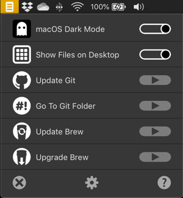
MNU comes pre-configured with these useful items:
- A switch to enable or disable macOS’s Dark Mode (Mojave and up)
- A switch to show or hide files on the Desktop
- A switch to show or hide hidden files
- A trigger to update your Git repos (requires gitup)
- A trigger to update your Homebrew installation (
brew update) - A trigger to upgrade your Homebrew installation (
brew upgrade) - Any or all of these stock items can be hidden from view if you don’t need them; you can add your own items; and you can re-order the items.
How to Use MNU
The first time you run MNU, it will ask you whether you want it to start automatically the next time you log into your Mac. We recommend that you click Yes, but you can always start MNU manually by double-clicking on its icon. If you click No and subsequently change your mind, you can tell MNU to start automatically by setting the appropriate preference.
If you click Yes when you see the start automatically request or when you first use one of MNU’s items, macOS will request permission to grant MNU the right to access System Events. Please OK this request. macOS will also also you to grant MNU permission to access Terminal. Again, please OK this request.
Important MNU will not fully function without these permissions:
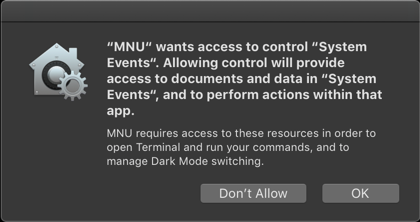
You can always check the permissions granted to MNU by opening System Preferences > Security & Privacy > Privacy > Automation:
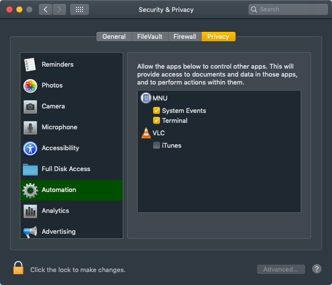
How To Configure MNU
To configure MNU, click on the gearwheel icon in the last item on the menu:
MNU’s controls (left to right): Quit, Configure and Help
This pops up the Configure MNU window: make sure the Menu Items tab is showing:
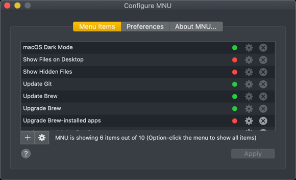
The Menu Items tab lists the menu items currently set up for MNU in the order in which they appear in MNU. You can reorder the items just by grabbing one item and dragging it to the location you prefer. When you’re done, click Apply to update MNU, or close the window to ignore any changes you have made.
All of the menu items feature a button which allow you to hide any such items that you don’t need. The button is green is its item is shown in the menu, or red if it is not. Just click to hide any shown item. If you later decide you’d like to see a hidden item after all, just click the button (now coloured red) to bring its item back to MNU.
Hint option-click MNU’s menu bar icon to temporarily view the complete menu, including hidden items.
The other buttons, which are disabled for pre-installed items, allow you to edit or delete items you have added yourself:
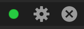
MNU’s item controls (left to right): Show/hide, Edit and Delete
How to Add and Edit Your Own Menu Items
Initially, MNU contains only the built-in items, but you can add further ones by clicking + in the Configure MNU window. This presents a sheet in which you can enter a Terminal command that can then be invoked from MNU’s main menu. The command can be a simple request to change directory (for example, cd $HOME), or can be a complex command line sequence that invokes a script or command and passes in fixed arguments (such as, ~/scripts/myimageresizescript.py -size 640 480):
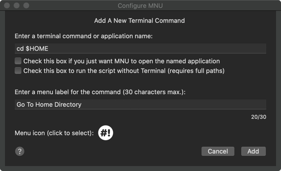
You will also need to give the command a name by which it will be listed in the MNU menu. This should not match the name of an existing item. Lastly, click on on the circular Menu icon to change the image which will appear alongside the item in the menu:
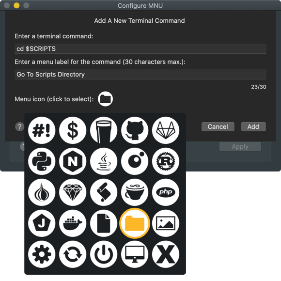
Click on a new icon to select it, then click off the popup panel to hide it. When you are done, click Add, or Cancel to discard your changes.
The new item will now be listed in the Configure MNU window’s Menu Items tab, but it won’t be added to MNU until you click Apply; closing the window will cause the new item to be discarded.
Items you have added can be deleted from the list, or they can be edited if you need to make a change: just click on the delete or edit buttons, respectively:
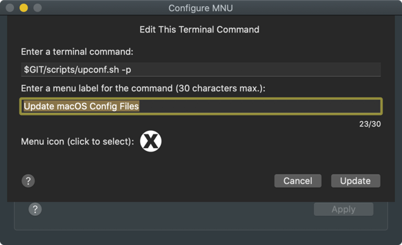
When MNU quits — you have restarted or shutdown your Mac, or you have clicked the quit icon at the bottom of the menu — it saves the current state of the menu so it’s ready for next time.
Opening Applications
From version 1.2.0, MNU also allows you to name apps that can then be activated from the menu bar. Add a new item as outlined above, but this time simply enter the name of the application and tick the Check this box if you just want MNU to open the named application checkbox:
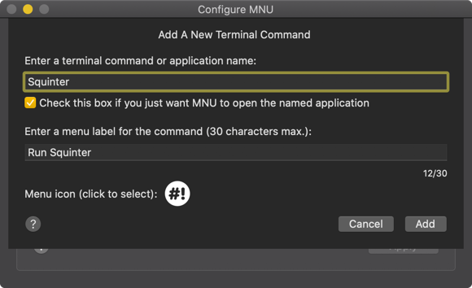
Click Add and then Apply. When you select the application from MNU, it will be opened without first opening the macOS Terminal.
How to Backup and Restore Your Menu Items
New in Version 1.1.0 You can export a record of the items presented by MNU by clicking the gearwheel button then selecting the Backup MNU Items… option. This will present a dialog in which you choose the location of the record.
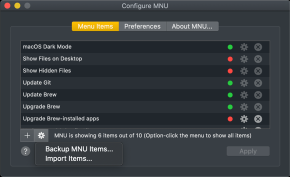
Loading in a saved list of items is just a matter of clicking the gearwheel button, selecting the Import Items… option and locating the record file when prompted. This action will replace all of the items listed in the Menu Items tab, but the menu itself will not be updated (and the new items saved for next time) until you click Apply. If you just close the Configure MNU window, the imported items will be ignored (though the backup list can be imported again at another time).
You might use this feature for backup purposes, or to synchronise menu items across multiple Macs. Because menu items can be set to trigger scripts that may download and run software on your Mac, only import menu item files you trust.
MNU Preferences
The second tab in the Configure MNU window shows MNU’s preferences:
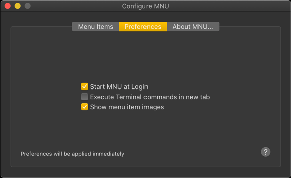
Currently there is just three:
- The option to start MNU automatically when you log into your Mac.
- The option to run Terminal commands in a new tab.
- The option to show item images in MNU’s menu.
The first of these will initially be set only if you asked MNU to start automatically when MNU gave you this choice on its first run. Checking or un-checking this preference will, respectively, cause MNU to be added to or removed from System Preferences’ Users & Groups > Login Items readout:
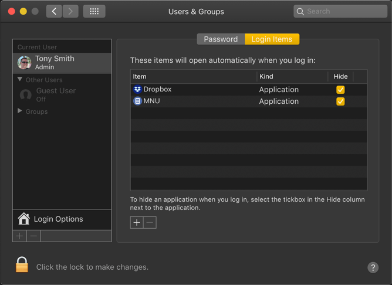
We recommend you enable this option so that MNU is always present in your mac’s menu bar when you need it.
Running Terminal commands in a new tab will always ensure MNU doesn’t affect any Terminal tabs you already have open and in which you may be already running a command. If this option is not checked, MNU will always run commands in Terminal’s first tab, whether it is already running a command or not.
MNU presents images to help you identify menu items quickly, including a generic icon for items you have added yourself. If you don’t want MNU to include these images, un-check this option.
The Configure MNU window’s last tab provides some information about MNU:
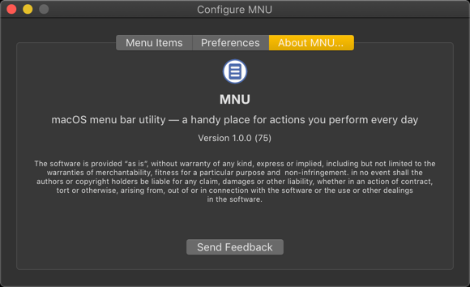
Please click the Send Feedback button to report any problems you encounter with MNU, or to make suggestions for future functionality. We can’t respond to every feedback message we receive, but we will make a note of all bugs reported and any comments that you have to make about the app.
Release Notes
- 1.2.1
- Add copy, cut, paste, select all, undo and redo to the Add/Edit User Item text fields.
- 1.2.0
- Add app opening.
- 1.1.1
- Add app restart installer scripts.
- 1.1.0
- Add an extra controls button, , to the Configure window:
- Export a JSON representation of the current menu item lits for backup and/or sync across Macs.
- Import JSON backups.
- Add tooltips to key UI items.
- Add an extra controls button, , to the Configure window:
- 1.0.1
- Minor improvements.
- Show correct version in MNU menu bar tooltip.
- 1.0.0
- Initial public release.
Source Code
You can view MNU’s source code at GitHub.
Related Software


Site and software copyright © 2014-20, Tony Smith
Site Last Updated: 4 February 2020